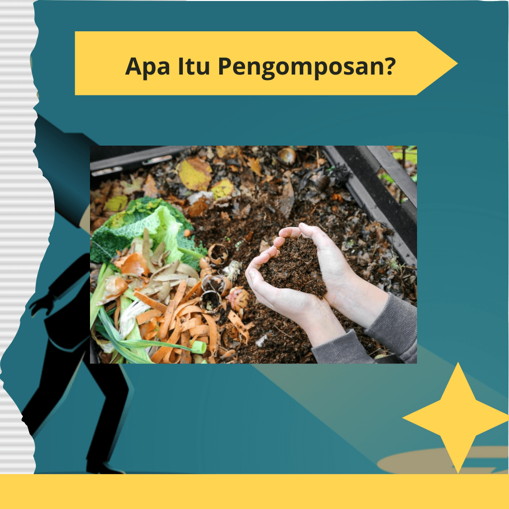
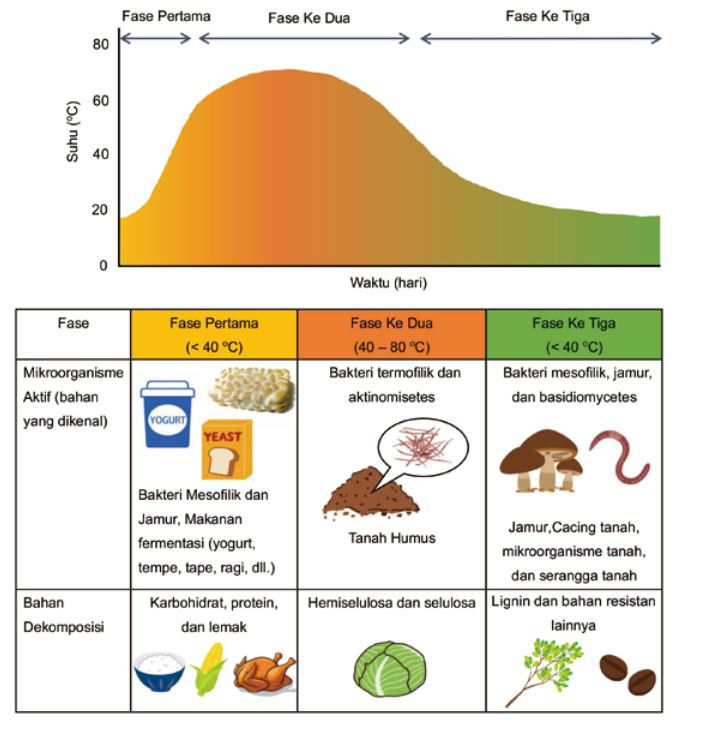
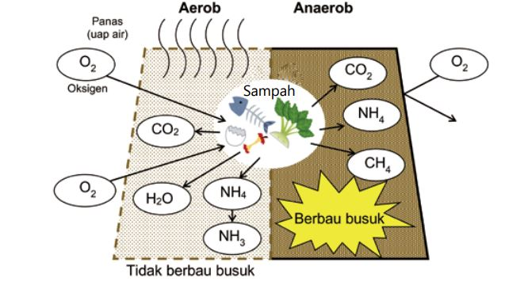
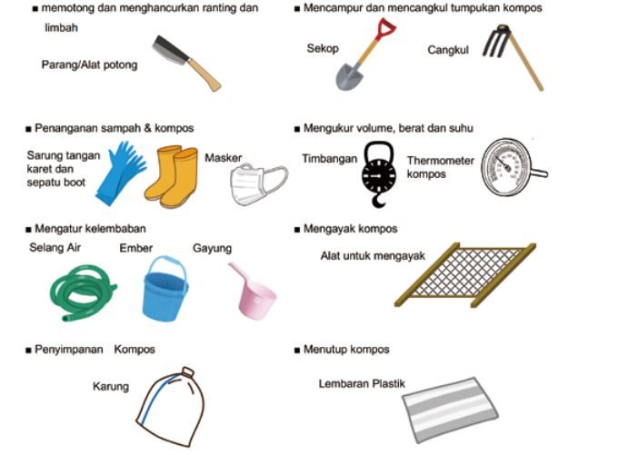

Apa itu Pengomposan?
Pengomposan adalah proses biologis di mana mikroorganisme, seperti bakteri dan jamur, menguraikan bahan organik menjadi humus, sebuah bahan kaya nutrisi yang dapat digunakan sebagai pupuk. Proses ini biasanya melibatkan pengumpulan sampah organik, seperti sisa makanan, daun kering, dan limbah kebun, yang kemudian dibiarkan dalam kondisi tertentu agar terurai.
Langkah-langkah Pengomposan
- Pengumpulan Bahan: Mengumpulkan bahan organik seperti sayuran, buah-buahan, daun, dan limbah dapur lainnya.
- Penyusunan: Bahan yang dikumpulkan disusun dalam tumpukan atau wadah kompos. Pastikan ada campuran bahan hijau (kaya nitrogen) dan bahan coklat (kaya karbon) untuk mempercepat proses.
- Penguraian: Mikroorganisme mulai bekerja mengurai bahan organik. Proses ini memerlukan kelembapan dan sirkulasi udara yang baik.
- Pematangan: Setelah beberapa minggu hingga bulan, bahan kompos akan terurai sepenuhnya menjadi humus. Pupuk kompos yang dihasilkan bisa digunakan untuk meningkatkan kualitas tanah.


Manfaat Pengomposan
- Mengurangi limbah organik.
- Meningkatkan kesuburan tanah.
- Mengurangi penggunaan pupuk kimia.
Fasilitas dan Peralatan
Untuk pengomposan skala kecil, seluruh proses dapat dilakukan secara manual. Peralatan yang dapat digunakan untuk menangani dan mengelola pusat kompos skala kecil adalah sebagai berikut:
Cara Melakukan Pengomposan
- Pilih Tempat Pengomposan: Temukan lokasi yang cukup untuk menampung tumpukan kompos. Anda bisa menggunakan wadah kompos atau hanya membuat tumpukan di halaman belakang.
-
Kumpulkan Bahan Organik: Kumpulkan berbagai bahan organik seperti:
- Bahan Hijau: Sisa sayuran, kulit buah, limbah dapur, dan rumput yang dipangkas.
- Bahan Coklat: Daun kering, jerami, kertas, dan sisa kayu.
- Susun Bahan dengan Benar: Campurkan bahan hijau dan coklat dalam tumpukan kompos. Idealnya, perbandingan antara bahan hijau dan coklat adalah 1:3. Susun bahan dengan lapisan yang teratur untuk memastikan sirkulasi udara yang baik.
- Menjaga Kelembapan: Pastikan tumpukan kompos tetap lembap tetapi tidak terlalu basah. Anda dapat menyemprotkan air jika tumpukan terlalu kering.
- Pengadukan Tumpukan: Setiap beberapa minggu, aduk tumpukan kompos untuk meningkatkan aerasi dan mempercepat proses penguraian. Ini juga membantu mencegah bau tidak sedap.
- Tunggu hingga Pematangan: Proses pengomposan memerlukan waktu, biasanya antara 2 hingga 6 bulan. Anda akan tahu kompos siap digunakan ketika bahan-bahan telah terurai menjadi tekstur yang lembut dan berwarna gelap.